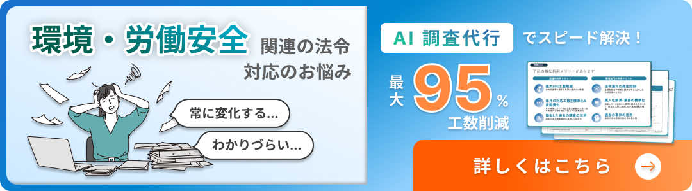

2026年（令和8年）10月1日、労働安全衛生法等の一部を改正する法律（令和7年法律第33号）に基づく改正が施行され、個人ばく露測定の測定精度の担保に係る制度がスタートします。従来、個人ばく露測定は作業環境測定法上の正式な測定手法としては位置づけられておらず、測定実施者の限定も測定精度を担保する仕組みもありませんでした。令和5年度の専門家検討会中間とりまとめで精度担保の必要性が示され、令和7年法律第33号および令和8年政令第196号により制度化。令和8年7月公布の整備省令（厚生労働省令第116号）と関連告示で実施の細目が定まりました。
本記事では、改正の3つの柱、7月公布の省令・告示で決まったこと、そして現場での判断の流れ（前提確認→Step1〜4）と資格者要件までを解説します。
出典：厚生労働省「改正労働安全衛生法・作業環境測定法の解説」 https://www.mhlw.go.jp/stf/seisakunitsuite/bunya/koyou_roudou/roudoukijun/anzen/an-eihou/index_00001.html
EHS（環境・労働安全衛生）法令の調査代行「Cayzen EHS Research」のサービス資料を無料でダウンロードいただけます。
改正の3つの柱
今回の改正のポイントは次の3点です。
柱1：作業環境測定への位置づけ
個人ばく露測定（デザイン・サンプリング・分析）を、作業環境測定法上の作業環境測定に明確に位置づけます。
柱2：指定作業場の追加
個人ばく露測定を行う作業場を「指定作業場」に追加し、測定士による実施を義務化します。
柱3：資格者要件の明確化
デザイン・サンプリングは登録を受けた測定士が、分析は対応区分の第一種測定士が実施します。補助者制度も新設されます。
令和8年10月1日以降は、すべての個人ばく露測定で作業環境測定士（個人ばく露測定の登録を受けた者）による実施が義務となります。旧講習修了者も登録証の書換えが必要です。
7月公布の省令・告示で決まったこと
法律・政令で枠組みが決まり、令和8年7月公布の整備省令と告示で「誰が・どうやって」測定・分析するかの細目が確定しました。
整備省令（厚生労働省令第116号・7月29日公布）
個人ばく露測定を作業環境測定として位置づけ、作業環境測定基準を適用。測定が必要な場面（第三管理区分作業場・金属アーク溶接等・改善措置の評価等）を規定し、サンプリング・分析の補助者制度と登録・講習制度を整備。旧講習の修了証・登録機関は新制度上のものとみなす経過措置が設けられました。
告示第279号（7月29日公布）
デザイン・サンプリングの限定登録を規定。日本作業環境測定協会の認定オキュペイショナルハイジニスト等を、個人ばく露測定のデザイン・サンプリングに限定した第二種作業環境測定士として登録できます（限定登録者はA・B測定、C・D測定、分析は実施不可）。
告示第292号（7月31日公布）
分析を行う第一種測定士の要件を規定。技術上の指針に分析方法の定めがある物質はその方法に対応する登録区分の第一種測定士、定めがない場合は選定した方法に対応する登録区分の第一種測定士、登録講習にない方法は必要な機器・分析能力を有する第一種測定士が実施します。
このほか8月にも、サンプリング補助者講習規程（告示第293号）、関係告示の整備（告示第325号）、施行通達（基発0821第2号）が公布・公表されています。
現場の判断の流れ：前提確認からStep4まで
前提確認：濃度基準値設定物質を屋内で取り扱っているか
次の3条件すべてに該当すれば、判断フローに進みます。
- 条件A：厚生労働大臣が濃度基準値を定めた化学物質（現在179物質、令和8年10月1日から78物質追加適用）を使用している。SDSの「ばく露防止措置」欄や、職場のあんぜんサイトの一覧Excelとの照合で確認できます
- 条件B：製造し、又は取り扱っている（原料として使う、混合する、塗布する、洗浄に使う、容器に移し替える等。密閉容器での保管のみは該当しません）
- 条件C：屋内作業場（工場建屋、倉庫、実験室など）で行っている
Step1：リスクアセスメントで推定ばく露濃度を算出
厚労省の無料WebツールCREATE-SIMPLEによる数理モデル、検知管・リアルタイムモニターによる簡易実測法、既存の作業環境測定（A・B測定)の結果の活用、の3つの方法があります。
Step2：推定値を濃度基準値の1/2と比較
推定ばく露濃度が八時間濃度基準値の1/2を超える場合は「ばく露が多い」に該当し、確認測定（個人ばく露測定）の実施が法的義務となります（安衛法第65条の3）。例えばトルエン（八時間濃度基準値50ppm）なら、25ppmを超えたらStep3へ進みます。超えない場合の確認測定は義務ではありませんが、推定には誤差があるため一度は実測して確認することが強く推奨されています。
Step3：確認測定を実施
①化学物質の取扱い全作業の洗い出し、②SEG（均等ばく露作業グループ）へのグルーピング（部署単位ではなく、物質・作業方法・取扱量・換気などばく露条件の類似性で分ける）、③各SEGで最大ばく露労働者を含む適切な数（2人以上）の選定、④呼吸域の測定（ばく露が最も高くなる作業日にサンプラーを装着し全時間採取、8時間加重平均濃度（8h-TWA）を算出）の順で進めます。
Step4：実測値を濃度基準値（100％）と比較
ここでの比較基準は1/2ではなく濃度基準値そのもの（100％）です。超過した場合のリスク低減措置は、①発散源の密閉化、②局所排気装置の設置・改善、③全体換気の改善、④作業方法の変更、⑤呼吸用保護具の使用の優先順位で検討します（呼吸用保護具は最後の手段）。超過している間は少なくとも6月に1回の確認測定を継続し、測定結果・評価結果・措置内容は記録・保存して衛生委員会で審議します。

資格者要件：令和8年10月以降は「誰が」測るのか
デザインとサンプリングは個人ばく露測定の登録を受けた第一種又は第二種作業環境測定士、分析は分析方法に対応する登録区分の第一種作業環境測定士が実施します。登録講習修了者（サンプリング補助者講習）は測定士の指定する方法の範囲内で補助でき、分析では一級化学分析技能士が補助者となれます（所属事業場の試料に限る）。委託前には、測定士・測定機関の登録証が「個人ばく露測定実施可」に書換え済みか、分析担当者の登録区分が用いる分析方法に対応しているかの確認が必要です。
現場で今すぐやる5つのアクション
- SDSを確認する：使用化学物質の物質名を「職場のあんぜんサイト」の濃度基準値設定物質一覧と照合する
- CREATE-SIMPLEで推定する：該当物質があれば取扱条件を入力し、推定ばく露濃度を確認する
- 1/2基準と比べる：推定値が濃度基準値の1/2を超えたら確認測定が法的義務。超えなくても一度は実測を推奨
- 委託先の資格を確認する：自社に登録を受けた測定士がいなければ外部に委託（小規模事業場は外部委託が現実的）。登録証の書換えと分析方法への対応区分を確認
- 結果を記録し共有する：測定結果・評価・措置内容を記録保存し、衛生委員会で審議。基準値超過なら少なくとも6月に1回測定を継続
まとめ
令和8年10月1日以降、個人ばく露測定は作業環境測定として位置づけられ、登録を受けた作業環境測定士による実施が義務となります。まずは自社で濃度基準値設定物質を屋内で取り扱っていないかの前提確認から始め、CREATE-SIMPLE等での推定、1/2基準との比較、必要に応じた確認測定へと進めていきましょう。旧講習修了者の登録証の書換え（令和8年10月1日までに必要）や委託先の資格確認も忘れずに進めてください。
出典・参考資料
- 厚生労働省「安衛法等一部改正法の施行に向けた検討資料」 https://www.mhlw.go.jp/content/11201000/001694940.pdf
- 厚生労働省「技術上の指針公示第24号」 https://www.mhlw.go.jp/content/11305000/001091287.pdf
- 職場のあんぜんサイト「濃度基準値設定物質一覧（179物質）」 https://anzeninfo.mhlw.go.jp/user/anzen/kag/ankgc11.html
- 整備省令（令和8年厚生労働省令第116号・7月29日官報） https://www.kanpo.go.jp/20260729/20260729g00169/20260729g001690073f.html
- 告示第279号（限定登録・7月29日官報） https://www.kanpo.go.jp/20260729/20260729g00169/20260729g001690180f.html
- 告示第292号（分析者の要件・7月31日官報） https://www.kanpo.go.jp/20260731/20260731g00172/20260731g001720272f.html
- 施行通達（基発0821第2号・令和8年8月21日） https://www.mhlw.go.jp/content/11300000/001742305.pdf
- 厚生労働省リーフレット「登録証の書換え」 https://www.mhlw.go.jp/content/11300000/001744888.pdf
- 厚生労働省「改正労働安全衛生法・作業環境測定法の解説」 https://www.mhlw.go.jp/stf/seisakunitsuite/bunya/koyou_roudou/roudoukijun/anzen/an-eihou/index_00001.html
- CREATE-SIMPLE マニュアル https://anzeninfo.mhlw.go.jp/user/anzen/kag/pdf/CREATE-SIMPLE_manual_v3.1.2.pdf
- 日本産業衛生学会「個人ばく露測定のガイドライン」 https://jsoh-ohe.umin.jp/files/kojinbakuro/guideline_231024.pdf